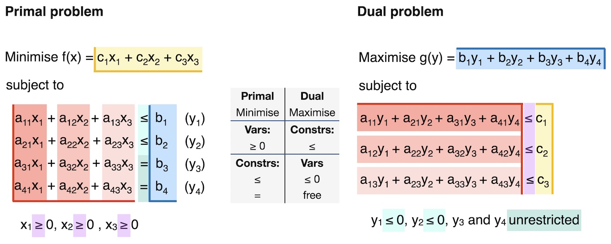

Duality and Sensitivity
- primal and dual problems
- Lagrange multipliers
- KKT conditions
- shadow prices, reduced costs and slack values
Uncertainty can also be related to the sensitivity of the objective to perturbations in the parameters. In other words, which parameters are most sensitive to changes, or what is the influence of parameters on the final objective?
Standard Notation
There are two standard notations for general optimization problems: one used by the LP community1 that wants to maximize the “profit”, the other by mathematicians who seek to minimize the “cost” function. We can easily transform one into the other by taking the negative of the objective function, i.e. maximizing a positive funtion \(f\) is strictly equivalent to minimizing \(-f.\) For a general theory, we usually consider the general optimization formulation, where we define
1 Also used in pyomo.
- \(\mathbf{x}\quad\) the vector of variables \((x_1,\ldots,x_n)^\top \in \mathbb{ R}^n\), also called unknowns or parameters.
- \(f\quad\) the objective, or cost function to minimize or maximize.
- \(\mathbf{c}\quad\) the vector function of \(m\) constraints \((c_1(\mathbf{x}), \ldots, c_m(\mathbf{x}) )\) that the unknowns must satisfy. Then, the optimization problem becomes \[\begin{equation} \min_{\mathbf{x}\in \mathbb{ R}^{n}}f(\mathbf{x})\qquad\mathrm{subject}\,\,\mathrm{to}\,\begin{array}{cc} \left\{ \begin{array}{cc} c_{i}(\mathbf{x})=0, & \quad i\in\mathcal{E},\\ c_{i}(\mathbf{x})\geq0, & \quad i\in\mathcal{I}, \end{array}\right.\end{array} \end{equation} \tag{1}\]
where \(\mathcal{E},\) \(\mathcal{I}\) are the index sets of equality and inequality constraints respectively.
The linear problem, \[ \mathrm{(LP)}\begin{cases} \mathrm{maximize} & \mathbf{c}^{\top}\mathbf{x}\\ \mathrm{subject\,to} & A\mathbf{x}\le\mathbf{b}\\ \mathrm{and} & \mathbf{x}\ge0. \end{cases} \tag{2}\]
and its dual \[ \mathrm{(LP')}\begin{cases} \mathrm{minimize} & \mathbf{b}^{\top}\mathbf{y}\\ \mathrm{subject\,to} & A^{\top}\mathbf{y}\ge\mathbf{c}\\ \mathrm{and} & \mathbf{y}\ge0. \end{cases} \tag{3}\]
More details below. The simplex algorithm is the basic approach for solving (LP).
The mixed-integer linear problem (MILP) is defined by \[ \mathrm{(MILP)}\begin{cases} \mathrm{maximize} & \mathbf{c}_{1}^{\top}\mathbf{x}+\mathbf{c}_{2}^{\top}\mathbf{y}\\ \mathrm{subject\,to} & A_{1}\mathbf{x}+A_{1}\mathbf{y}\le\mathbf{b}\\ \mathrm{and} & \mathbf{x}\ge0,\,\mathbf{y}\in\mathbb{Z}. \end{cases} \]
This is an NP-hard problem2, and must be solved by combinatorial methods based on graph theory. The most widely used commercial package for solving these is CPLEX.3
2 The computation time increases with \(N\) as \(\exp (cN)\) and becomes prohibitively expensive as the number of variables, \(N,\) increases.
Primal and Dual Problems
Duality theory shows how we can construct an alternative problem from the functions and data that define the original optimization problem. This alternative “dual” problem is related to the original problem, referred to as the “primal”, in fascinating ways. In some cases, the dual problem is easier to solve computationally than the original problem. In other cases, the dual can be used to obtain easily a lower bound on the optimal value of the objective for the primal problem. The dual has also been used to design algorithms for solving the primal problem. We can also use the dual formulation to perform sensitivity analysis. Here is how, and why, it works.
To define and obtain the dual formulation, we can use the Lagrangian formulation that is the basis of the Karush-Khun-Tucker (KKT) conditions for constrained optimization, which are in turn the generalization of the necessary conditions for optimality in unconstrained optimization. It can then be shown that the Lagrange multipliers are precisely the dual variables. Full details can be found in (Boyd and Vandenberghe 2004) and (Nocedal and Wright 2006).
Recall:
- Necessary conditions for optimality.
- Lagrangian formulation.
- KKT conditions.
Before starting, we recall the KKT conditions—the first order necessary conditions for the existence of an optimum. In the case of LP, which is a convex problem, these conditions are also sufficient. First, we define the Lagrangian for the general problem Equation 1 as \[ \mathcal{L} (x, \lambda) = f(x) - \sum_{i \in \mathcal{E} \cup \mathcal{I} } \lambda_i c_i(x) = f(x) - \lambda^\top c(x). \]
Note that for the linear problem Equation 2, this becomes \[ \mathcal{L} (x, \lambda) = c^\top x - \lambda^\top (Ax - b), \]
where slack variables (Nocedal and Wright 2006) are introduced to convert the bound constraints into equality constraints.
Theorem 1 (KKT Conditions) Suppose that \(x^*\) is an optimal solution of Equation 1. Then there is a Lagrange multiplier vector \(\lambda^*\) with components \(\lambda_i^*,\) \(i \in \mathcal{E} \cup \mathcal{I},\) such that the following condtions are satisfied at the optimum \((x^*, \lambda_i^*)\)
\[\begin{eqnarray*} \nabla_{x}\mathcal{L}(x^{*},\lambda^{*}) & = & 0\\ c_{i}(x^{*}) & = & 0,\quad\forall i\in\mathcal{E}\\ c_{i}(x^{*}) & \geq & 0,\quad\forall i\in\mathcal{I}\\ \lambda_{i}^{*} & \geq & 0,\quad\forall i\in\mathcal{I}\\ \lambda_{i}^{*}c_{i}(x^{*}) & = & 0,\quad\forall i\in\mathcal{E}\cup\mathcal{I}\end{eqnarray*}\]
Next, we introduce the notion of strong duality which is fundamental in the theory of linear programming.
Theorem 2 (Strong Duality Theorem) If either Equation 2 or Equation 3 has a finite-valued solution, then so does the other, and the objective values are equal. On the other hand, if either Equation 2 or Equation 3 is unbounded, then the other problem is infeasible.
Note that weak duality, which is valid for general optimization problems of the form Equation 1, implies that the dual solution is only a lower bound for the primal solution, \[ c^\top x \ge b^\top y.\]
To define the dual, we need to start with the Lagrangian.
Definition 1 (Dual Function) The dual function \(g\) is the minimum value of the Lagrangian over \(x.\) We write \[ g(\lambda) = \inf_x \mathcal{L} (x, \lambda) . \]
And the dual problem to \[ \min_{x\in \mathbb{R}^n} f(x) \quad \text{s.t.} \quad c(x) \ge 0 \tag{4}\]
is then \[ \max_{\lambda\in \mathbb{R}^m} g(\lambda) \quad \text{s.t.} \quad \lambda \ge 0. \tag{5}\]
Note that, thanks to strong duality, the optimal Lagrange multipliers for the primal problem Equation 4 are solutions of this dual problem.
An important special case of Equation 4 is the LP problem \[ \min_{x\in \mathbb{R}^n} c^\top x \quad \text{s.t.} \quad Ax - b \ge 0 ,\]
for which the dual objective is \[ \begin{align} g(\lambda) &= \inf_x \left[ c^\top x - \lambda^\top (Ax - b) \right] \\ &= \inf_x \left[ (c - A^\top \lambda)^\top x - b^\top \lambda \right] . \end{align} \]
Finally, since we must impose \(c - A^\top \lambda = 0\) to obtain a finite infimum, the dual problem Equation 5 can be written as \[ \max_\lambda b^\top \lambda \quad \text{s.t.} \quad A^\top \lambda = c, \, \lambda \ge 0. \]
This explains the form of Equation 3 above.
Lagrange Multipliers, Dual Variables and Sensitivity
We will now show that each Lagrange multiplier \(\lambda_i^*\) describes the sensitivity of the optimal value of the objective, \(f(x^*),\) with respect to the constraint \(c_i.\) In other words, a dual variable descibes the sensitivity of the primal objective to a change in the corresponding constraint. In fact, the process of finding \(\lambda\) for a given optimal \(x\) is often called sensitivity analysis.
Since the optimal objectives of the primal and dual problems are equal, for both the original and perturbed problems, we have \[ c^\top x = b^\top \lambda \] and \[ c^\top (x + \Delta x) = (b+ \Delta b)^\top (\lambda + \Delta \lambda).\]
We can then easily show (Nocedal and Wright 2006) that \[ c^\top \Delta x = (\Delta b)^\top \lambda .\]
Hence, if we have a small perturbation \(\Delta b = \epsilon e_j,\) then for all \(\epsilon\) sufficiently small
\[ c^\top \Delta x = \epsilon \lambda_j. \]
That is, the change in optimal objective is \(\lambda_j\) times the size of the perturbation to \(b_j,\) if the perturbation is small. And in the general case, \[ \lambda_j^* = \frac{\partial{f^*}}{\partial{b_j}} , \]
which is exactly the definition of the sensitivity of a function to a given variable.
Shadow Prices, Marginal Values
In the context of an optimal resource allocation problem, we have the following definition of the so-called shadow price, or marginal value.
The dual variable, or Lagrange multiplier, \(\lambda_i^*,\) defines the shadow price, that tells us how much more profit we can make for a small increase in the availability of resource \(b_i.\)
We make the following interpretation:
- if \(\lambda_i^* = c \gtrless 0,\) then increasing (decreasing) \(b_i\) by one unit will increase (decrease) the profit (primal objective function) by \(c,\)
- if \(\lambda_i^* = 0,\) then constraint \(b_i\) is not active (binding) and there is a surplus of resource \(i,\) which could eventually be reallocated elsewhere. The optimal solution is not sensitive to (small) changes in \(b_i.\)
We resume the above:
- The shadow price is the change in the optimal objective value if the right-hand side of an active constraint increases by a marginal amount. All other parts of the problem remain unchanged.
- The shadow price is the marginal cost or marginal benefit of relaxing a certain constraint.
- Formally, the shadow price represents an infinitesimally small change that can be interpreted as the derivative of the objective function with respect to the specific constraint that is being relaxed.
Coverting Primal to Dual
To sum up, here is a “recipe” for converting between primal and dual problems.
Step 1: Rewrite in standard form:
Minimisation.
All constraints of the form \(ax \leq b\)..
All variables with bound \(\geq 0 .\)
Step 2: Convert the standard-form primal problem into the dual problem, as illustrated below.

- The primal objective function coefficients, \(c_i\), are the dual constraint parameters.
- The primal constraint parameters, \(b_j\), are the dual objective function coefficients.
- The primal constraints in \(\leq\) form lead to dual variables \(y_m \leq 0.\)
- The primal constraints in \(=\) form lead to dual variables \(y_m\) which are unconstrained / free.
- The primal variables \(x_i \geq 0\) lead to dual constraints of \(\leq\) form.
- The constraint coefficient \(a_{ij}\) corresponds to the \(i\)-th constraint and \(j\)-th variable in the primal problem. It corresponds to the \(j\)-th constraint and \(i\)-th variable in the dual problem.
Conclusion
- Primal variables become dual constraints.
- Primal constraints become dual variables.
This explains (intuitively) why the the solution of the dual problem produces the sensitivity of the objective to the (primal) constraints. That is, how much a change in the constraint will affect a change in the objective.
The connection between duality and KKT conditions
We know that for every primal problem, there exists a dual problem.
Recall the general formulation of a primal problem, \[\begin{align} \text{min.} \; & f(x) \\ \text{s.t.} \; & h_i(x) = 0 \quad (\lambda_i) \quad \forall i \in \{1,2,...,m\} \\ & g_j(x) \leq 0 \quad (\mu_j) \quad \forall j \in \{1,2,...,n\} \end{align}\]
The Lagrangian is \[\begin{equation} \mathcal{L}(x,\lambda,\mu) = f(x) + \sum_{i=1}^m \lambda_i \cdot h_i(x) + \sum_{j=1}^{n} \mu_j \cdot g_j(x) \end{equation}\]
The Lagrangian dual function, or dual function, is the minimum of the Lagrangian, \[\begin{equation} \mathcal{D}(\lambda,\mu) = \text{inf}_{x} \{\mathcal{L}(x,\lambda,\mu)\} = \inf_{x} \{ f(x) + \sum_{i=1}^m \lambda_i \cdot h_i(x) + \sum_{j=1}^{n} \mu_j \cdot g_j(x) \}. \end{equation}\]
The dual function defines a lower bound on the optimal value \(p^*\) of the primal problem: \(\mathcal{D}(\lambda,\mu) \leq p^*\) for any \(\mu \geq 0\) and any \(\lambda.\) We want to find the best possible lower bound of the primal problem, which means maximising the lower bound:
\[\begin{align} \text{max.} \; & \mathcal{D}(\lambda,\mu) \\ \text{s.t.} \; & \mu_j \geq 0 \quad \forall j \in \{1,2,...,n\} \end{align} \tag{6}\]
This is the dual problem. We denote the optimal value of this problem as \(d^*\).
As mentioned above, strong duality holds when the optimal value of the primal equals the optimal value of the dual. In our new terminology, this is written as \(d^* = p^* .\) Strong duality can be used to show that a solution that satisfies the KKT conditions must be an optimal solution to the primal and dual problems. In other words, the KKT conditions are necessary and sufficient conditions for optimality.
Weak duality is when \(d^* \leq p^*\). This holds even for non-convex problems. In such problems, \(p^* - d^*\) is referred to as the duality gap.
In practice, we do not need to start from the general expression in Equation 6 to derive the dual problem. Instead, we can simply follow the steps introduced above: write the primal problem in standard form and then mechanically translate it into its dual counterpart.